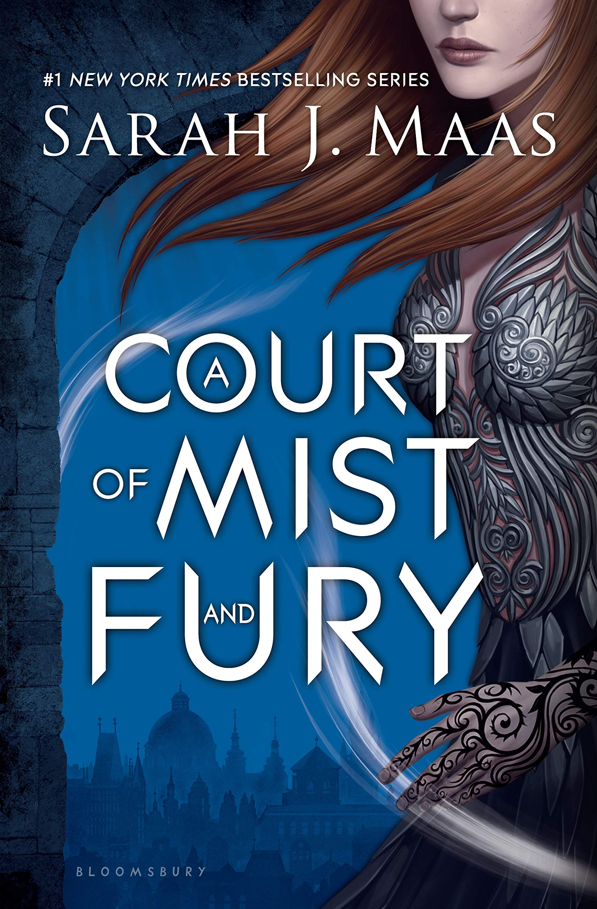

A Court of Mist and Fury by Sarah J. Maas
Sinopsis
Feyre survived Amarantha's clutches to return to the Spring Court but at a steep cost. Though she now has the powers of the High Fae, her heart remains human, and it can't forget the terrible deeds she performed to save Tamlin's people.
Nor has Feyre forgotten her bargain with Rhysand, High Lord of the feared Night Court. As Feyre navigates its dark web of politics, passion, and dazzling power, a greater evil looms and she might be key to stopping it. But only if she can harness her harrowing gifts, heal her fractured soul, and decide how she wishes to shape her future and the future of a world cleaved in two.
With more than a million copies sold of her beloved Throne of Glass series, Sarah J. Maas's masterful storytelling brings this second book in her seductive and action-packed series to new heights.
Want this book?
You can buy it here.About Sarah J. Maas
Sarah J. Maas is the #1 New York Times and internationally bestselling
author of the Throne of Glass, Court of Thorns and Roses, and Crescent
City series. Her books have sold millions of copies and are published
in thirty-seven languages. Sarah lives with her husband, son, and
dog.
sarahjmaas.com
facebook.com/theworldofsarahjmaas
instagram.com/therealsjmaas